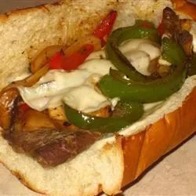

Steak Sandwich

Descripion
If you are looking for a steak sandwich recipe that's packed with flavor, then this sensational slow cooker steak sandwich recipe is for you!
Ingredients
- 2 tablespoons olive oil
- 1 pound thinly sliced sirloin steak strips
- 8 ounces sliced fresh mushrooms
- 1 green bell pepper, seeded and cut into strips
- 1 medium onion, sliced
- 10 slices provolone cheese
- 1 loaf French bread
- 1 (14 ounce) can beef broth
- ½ teaspoon salt
- ½ teaspoon ground black pepper
- ½ teaspoon garlic powder
- 2 tablespoons Worcestershire sauce
- ⅛ teaspoon red pepper flakes
- ¼ cup Pinot Noir or other dry red wine
- ½ cup prepared horseradish (Optional)
- ½ cup brown mustard (Optional)
Steps
- Heat oil in a large skillet over medium heat. Add steak and cook until browned. Add mushrooms, bell pepper, and onion; cook and stir until just tender, about 5 minutes.
- In a slow cooker, combine beef broth, salt, pepper, Worcestershire sauce, red pepper flakes, and red wine. Transfer steak and vegetables to the slow cooker; stir to blend. Cover and cook on High for 3 to 4 hours, or until beef is extremely tender.
- Preheat the oven to 425 degrees F (220 degrees C). Drain liquid from the slow cooker and save for dipping.
- Slice French bread loaf lengthwise like a submarine sandwich. Mix together horseradish and mustard; spread onto the inside of loaf. Place slices of provolone cheese on both sides of loaf, then fill with steak and vegetables. Close the loaf and wrap with aluminum foil.
- Bake for 10 to 15 minutes in the preheated oven. For crunchier bread, you can bake it without the aluminum foil. Slice into 4 sandwiches; serve with the juices from the slow cooker for dipping.